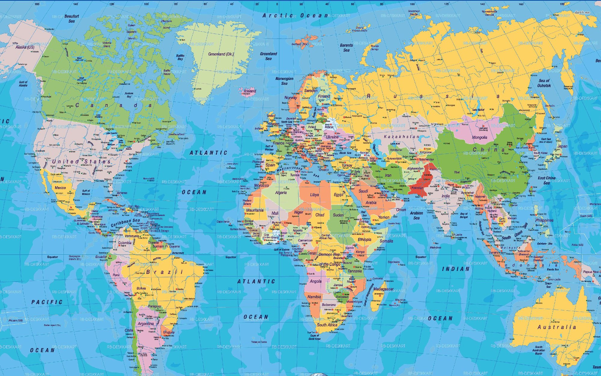

The framework did not encounter Africa and find nothing there. It encountered the origin point of human mathematical thought, the most genetically diverse populations on Earth, millennia of accumulated botanical knowledge, and the oldest continuously living human lineages — and extracted each in turn. The trajectories are documented. The landing points are named. The origin platform has never been credited.

The oldest mathematical artifact on Earth. Three columns. Prime numbers. All four arithmetic operations. The tradition runs north through the Nile corridor into Kemet, east through the Vedic tradition — Brahmagupta formalizes zero, 628 CE — through Al-Khwarizmi's algebra, 820 CE — and lands in Western European academic institutions which claim the tradition as their own inheritance.
The most genetically diverse populations on Earth. More genetic variants in Africa than every other continent combined. The framework first stripped the cosmological dimensions from reproduction — the Kemetic, Kongo, and Vedic understanding of continuous becoming — leaving a raw biological drive it could legislate, shame, and weaponize. Then extracted the genetic science confirming African origin priority.
Millennia of accumulated indigenous knowledge. Hoodia: San people, patented by CSIR, sold to Pfizer. San told they no longer existed. Brazzeine: Gabon, 500× sweeter than sugar, patented in Wisconsin. Teff: Ethiopia, 4,000 BCE, Dutch patent filed. Pelargonium: South Africa, respiratory medicine, European pharmaceutical companies. Obtaining indigenous knowledge increases pharmaceutical screening efficiency 400%+.
The physical artifact. Not gradual institutional absorption. Not centuries of knowledge transmission. A direct removal. The oldest mathematical artifact on Earth — carried from the same geography the Force Publique operated in — to Brussels. Same city. Same institutional tradition. The Brussels Act was signed in 1890. The bone arrived in 1950. The quartz tip is still attached. The forensic analysis has never been done.